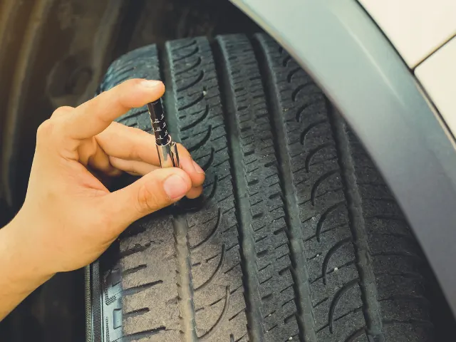
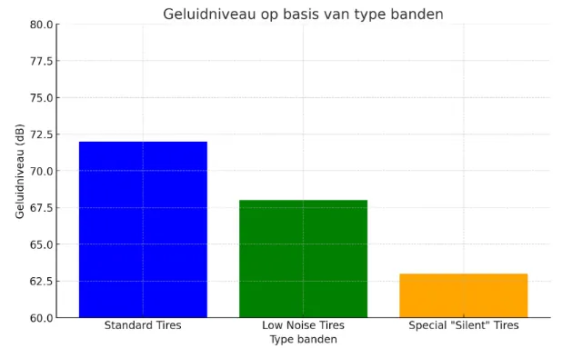

Banden, geluid en milieu in Nijmegen
Gepubliceerd op 8 mei 2025

Wat voor een geluid maken je auto banden wanneer je door Nijmegen rijd?
Nijmegen, een van de oudste en mooiste steden van Nederland, staat bekend om zijn schilderachtige natuur en vredige sfeer. Maar ondanks de sfeer heeft de stad te kampen met het probleem van stadslawaai. Eenmaal op straat horen we vaak het lawaai van auto’s, dat een integraal onderdeel is van het stadsleven. Maar wist je dat dit geluid grotendeels afhangt van…. uw banden?
Stadsakoestiek en wat lawaai beïnvloedt
Stadsakoestiek is de som van alle geluiden die in een stedelijke omgeving worden gemaakt. Dit omvat het geluid van auto’s, het geluid van mensen en zelfs het geluid van bouwwerkzaamheden. Lawaai van auto’s heeft vooral te maken met hun bewegingen op de weg en banden zijn hierbij een belangrijke factor. Het blijkt dat goed geselecteerde banden het geluidsniveau op straat aanzienlijk kunnen verlagen en ook de impact op het milieu kunnen verminderen.
TIP van een Expert:
Een banden-snelheidsindex is een indicatie van de maximumsnelheid waarmee je met deze banden mag rijden. Deze waarde is niet te verwarren met de zogenaamde load index (laadindex), die het maximumgewicht aangeeft, waarmee de band mag worden belast. Beide waarden staan op de zijwand van de band. Deze waarden waarborgen de veiligheid op de weg. Het is zaak bij aanschaf van banden altijd op de juiste bandenmaat te letten met de correcte laad- en snelheidsindex, die worden aanbevolen door de fabrikant.

Milieunormen en de bandenmarkt
Moderne milieunormen verplichten voertuig- en onderdelenfabrikanten (inclusief bandenfabrikanten) om hun impact op het milieu te verminderen. In de afgelopen jaren zijn de eisen om het geluidsniveau in steden in Nederland te verminderen aangescherpt. Lokale autoriteiten zijn begonnen met het actief monitoren van geluidsniveaus en het introduceren van programma’s om het stadslawaai te verminderen. Dit heeft ook invloed gehad op de bandenkeuze, die nu aan strengere geluids- en trillingsnormen moeten voldoen.
Geluidsarme banden zijn populair geworden omdat ze het geluid dat door de straten wordt verspreid kunnen verminderen. Vooral banden met geluidsreducerende technologie helpen om reizen comfortabeler te maken voor zowel bestuurders als omwonenden.
Wat bepaalt de akoestische omgeving van een stad?
Wanneer je banden voor je auto kiest, is het belangrijk om niet alleen naar de maat en het type te kijken, maar ook naar parameters zoals de snelheidsindex van de band. Deze index geeft de maximale snelheid aan waarop je je banden veilig kunt gebruiken, mits je de juiste bandenspanning hebt. Bij 20-inch autobanden kan de snelheidsindex bijvoorbeeld variëren van model tot model. Dit is belangrijk omdat een verkeerde snelheidsindex kan leiden tot verhoogde bandenslijtage en zelfs schade bij het rijden op hoge snelheden.
Autofabrikanten en experts zoals AUTODOCraden aan om banden zorgvuldig te kiezen en te focussen op een snelheidsindex die overeenkomt met de aanbevelingen van de autofabrikant. Het is belangrijk om te onthouden dat het kiezen van de verkeerde banden met een ontoereikende snelheidsindex niet alleen het geluidsniveau kan verhogen, maar ook de veiligheid kan verminderen.
Welke invloed hebben banden op het geluidsniveau in Nijmegen?
Studies hebben aangetoond dat het gebruik van banden met verbeterde geluidsprestaties de geluidsniveaus met 2-3 dB kan verlagen. Dit lijkt misschien een klein getal, maar in de praktijk is het een aanzienlijke vermindering van de geluidsbelasting op het stadslandschap.
Hier is een grafiek die laat zien hoe de geluidsniveaus variëren per bandentype:

Zoals te zien is, kunnen geluidsarme banden en speciale ‘stille’ banden het weggeluid aanzienlijk verminderen, wat belangrijk is voor de stadsakoestiek in Nijmegen. Hardere compoundbanden produceren meer geluid, terwijl zachtere en verbeterde modellen helpen om de geluidsimpact te verminderen.
Invloed op gezondheid en welzijn
Stadslawaai is niet alleen ongemakkelijk, maar ook een potentieel gevaar voor de gezondheid. Volgens de Wereldgezondheidsorganisatie kan chronisch lawaai leiden tot verschillende gezondheidsaandoeningen, waaronder hart- en vaatproblemen en slaapstoornissen. In Nijmegen, net als in andere grote steden, wordt het terugdringen van lawaai een belangrijke doelstelling om de kwaliteit van leven te verbeteren.
Conclusie
Het kiezen van banden is niet alleen een kwestie van veiligheid, maar ook van verantwoordelijkheid voor het milieu. Door te kiezen voor banden met een laag geluidsniveau verbeter je niet alleen het comfort van je rit, maar draag je ook bij aan een stillere en schonere stad. In Nijmegen, waar ecologie en leefbaarheid goud waard zijn, kan het kiezen van de juiste banden een belangrijke stap zijn in het verbeteren van de akoestiek van de stad en het terugdringen van geluidsoverlast.
Terug naar de beginpagina
BEKIJK